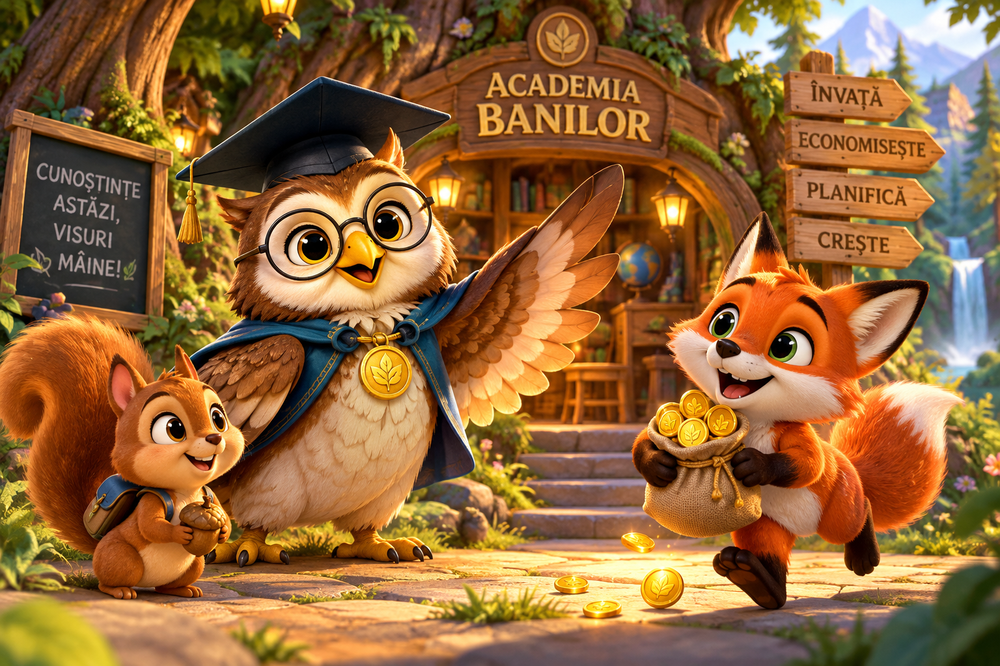

⭐ Nivelul 1Nevoi sau dorințe?
Bani: O nevoie este ceva important pentru viața noastră. O dorință este ceva ce ne-ar plăcea să avem. Hai să descoperim diferența!
Întrebarea 1 din 6
Pâine pentru masă
Felicitări, exploratorule! 🎉
Ai învățat să deosebești nevoile de dorințe. Bani este mândru de tine!
Continuă aventura →